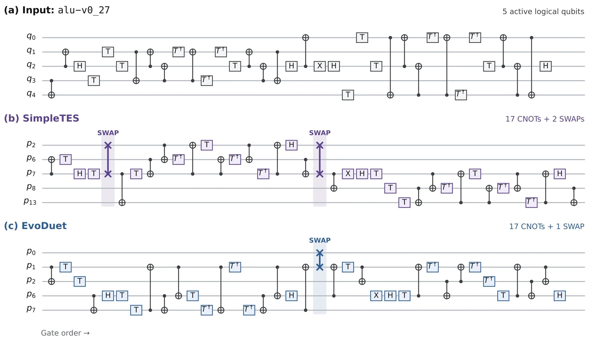

- Previous best
- 15,186SWAPs
- EvoDuet
- 14,835SWAPs
- Objective
- Added SWAPs on Q20 ↓
- Run cost
- $50.90


Source
Rust
// EVOLVE-BLOCK-START
#[derive(Debug, Clone, Copy, PartialEq, Eq)]
pub enum SetScaling {
Constant,
Size,
}
#[derive(Debug, Clone, Default)]
struct FrontLayerScores {
nodes: Vec<[usize; 2]>,
// Keep every front-layer partner: a logical qubit may occur in several
// simultaneously ready two-qubit operations.
qubits: Vec<Vec<usize>>,
}
impl FrontLayerScores {
/// Builds a front-layer index retaining all incident partner qubits.
fn from_ctx(ctx: &SwapSelectionContext<'_>) -> Self {
let mut out = Self {
nodes: Vec::new(),
qubits: vec![Vec::new(); ctx.topology().num_qubits()],
};
for pair in ctx.front_layer().physical_pairs() {
let [a, b] = *pair;
out.nodes.push([a, b]);
out.qubits[a].push(b);
out.qubits[b].push(a);
}
out
}
fn len(&self) -> usize {
self.nodes.len()
}
fn is_empty(&self) -> bool {
self.nodes.is_empty()
}
fn is_active(&self, qubit: usize) -> bool {
!self.qubits[qubit].is_empty()
}
fn iter_active(&self) -> impl Iterator<Item = &usize> {
self.nodes.iter().flatten()
}
fn total_score(&self, topology: TopologyView<'_>) -> f64 {
self.nodes
.iter()
.map(|pair| topology.distance(pair[0], pair[1]) as f64)
.sum()
}
/// Computes the exact front-layer distance change, including both
/// endpoints moving when a candidate swaps two active qubits.
fn score_delta(&self, swap: (usize, usize), topology: TopologyView<'_>) -> f64 {
let (a, b) = swap;
let mut delta = 0.0;
for &[x, y] in &self.nodes {
let nx = if x == a {
b
} else if x == b {
a
} else {
x
};
let ny = if y == a {
b
} else if y == b {
a
} else {
y
};
delta += topology.distance(nx, ny) as f64
- topology.distance(x, y) as f64;
}
delta
}
/// Returns an extra reward for swaps that make one or more front gates
/// executable immediately, adding a nonlinear preference to the ordinary
/// shortest-distance heuristic.
fn completion_bonus(&self, swap: (usize, usize), topology: TopologyView<'_>) -> f64 {
let (a, b) = swap;
let mut bonus = 0.0;
for &[x, y] in &self.nodes {
let old_distance = topology.distance(x, y);
let nx = if x == a { b } else if x == b { a } else { x };
let ny = if y == a { b } else if y == b { a } else { y };
if old_distance > 1 && topology.distance(nx, ny) == 1 {
bonus += 1.0;
}
}
bonus
}
}
#[derive(Debug, Clone)]
struct ExtendedSetScores {
qubits: Vec<Vec<usize>>,
pairs: Vec<(usize, usize)>,
len: usize,
}
impl ExtendedSetScores {
fn new(num_qubits: usize) -> Self {
Self {
qubits: vec![Vec::new(); num_qubits],
pairs: Vec::new(),
len: 0,
}
}
fn push(&mut self, a: usize, b: usize) {
self.qubits[a].push(b);
self.qubits[b].push(a);
self.pairs.push((a, b));
self.len += 1;
}
/// Scores lookahead gates with geometric decay, preserving the scale of
/// the ordinary mean while giving nearer successor gates more influence.
fn weighted_score_delta(
&self,
swap: (usize, usize),
topology: TopologyView<'_>,
) -> f64 {
if self.pairs.is_empty() {
return 0.0;
}
let (a, b) = swap;
// Use a slower geometric decay so the router still accounts for
// several upcoming gates while prioritizing the earliest successors.
// Discount distant successor obligations more aggressively so that
// lookahead cannot override an urgently executable front-layer gate.
// Use a short, strongly prioritized horizon: the next few obligations
// are usually more predictive than distant DAG successors.
// Use moderate geometric decay so several near-term obligations
// contribute without allowing distant gates to dominate.
// A shorter horizon keeps the next dependency layers influential
// without letting distant, weakly correlated gates dominate.
let gamma = 0.60_f64;
let mut weighted = 0.0;
let mut weights = 0.0;
for (index, &(x, y)) in self.pairs.iter().enumerate() {
let weight = gamma.powi(index.min(32) as i32);
let nx = if x == a {
b
} else if x == b {
a
} else {
x
};
let ny = if y == a {
b
} else if y == b {
a
} else {
y
};
weighted +=
weight * ((topology.distance(nx, ny) as f64)
- (topology.distance(x, y) as f64));
weights += weight;
}
if weights == 0.0 {
0.0
} else {
weighted * (self.pairs.len() as f64) / weights
}
}
fn len(&self) -> usize {
self.len
}
fn is_empty(&self) -> bool {
self.len == 0
}
fn total_score(&self, topology: TopologyView<'_>) -> f64 {
self.qubits
.iter()
.enumerate()
.flat_map(|(a, others)| {
others
.iter()
.map(move |b| topology.distance(a, *b) as f64)
})
.sum::<f64>()
* 0.5
}
fn score_delta(&self, swap: (usize, usize), topology: TopologyView<'_>) -> f64 {
let (a, b) = swap;
let mut total = 0.0;
for other in &self.qubits[a] {
if *other == b {
continue;
}
total += (topology.distance(b, *other) as f64) - (topology.distance(a, *other) as f64);
}
for other in &self.qubits[b] {
if *other == a {
continue;
}
total += (topology.distance(a, *other) as f64) - (topology.distance(b, *other) as f64);
}
total
}
}
fn build_extended_set(ctx: &SwapSelectionContext<'_>, max_size: usize) -> ExtendedSetScores {
let mut out = ExtendedSetScores::new(ctx.topology().num_qubits());
if max_size == 0 {
return out;
}
let precomputed = ctx.precomputed_extended_set_logical_pairs();
if !precomputed.is_empty() {
for pair in precomputed.iter().take(max_size) {
out.push(
ctx.layout().physical_of_logical(pair[0]),
ctx.layout().physical_of_logical(pair[1]),
);
}
return out;
}
let mut required_predecessors = ctx.remaining().remaining_predecessor_counts().to_vec();
let mut to_visit = ctx.front_layer().node_ids().to_vec();
let mut decremented = Vec::<(usize, usize)>::new();
let mut i = 0usize;
while i < to_visit.len() && out.len() < max_size {
let node_id = to_visit[i];
for &successor in ctx.circuit().node(node_id).successors() {
if let Some((_, amount)) = decremented.iter_mut().find(|(idx, _)| *idx == successor) {
*amount += 1;
} else {
decremented.push((successor, 1));
}
required_predecessors[successor] -= 1;
if required_predecessors[successor] == 0 {
if let Some((a, b)) = ctx.circuit().node(successor).two_qubit_pair() {
out.push(ctx.layout().physical_of_logical(a), ctx.layout().physical_of_logical(b));
}
to_visit.push(successor);
}
}
i += 1;
}
out
}
/// Enumerate each legal edge incident to the front layer exactly once.
/// Deduplicating active endpoints removes tie-breaking bias when a qubit
/// participates in multiple ready gates, while retaining all legal swaps.
fn enumerate_candidate_swaps(
topology: TopologyView<'_>,
front_layer: &FrontLayerScores,
) -> Vec<(usize, usize)> {
let mut out = Vec::<(usize, usize)>::new();
let mut seen = vec![false; topology.num_qubits()];
for &phys in front_layer.iter_active() {
if seen[phys] {
continue;
}
seen[phys] = true;
for &neighbor in topology.neighbors(phys) {
if neighbor > phys || !front_layer.is_active(neighbor) {
out.push((phys, neighbor));
}
}
}
out
}
fn choose_dense_layout_subset(
topology: TopologyView<'_>,
logical_component_size: usize,
target_component: &[usize],
) -> Result<Vec<usize>, RouterError> {
if logical_component_size > target_component.len() {
return Err(RouterError::Routing(format!(
"logical component size {logical_component_size} exceeds target component size {}",
target_component.len()
)));
}
if logical_component_size == target_component.len() {
return Ok(target_component.to_vec());
}
let local_index = target_component
.iter()
.enumerate()
.map(|(local, global)| (*global, local))
.collect::<HashMap<usize, usize>>();
let mut local_adj = Array2::<f64>::zeros((target_component.len(), target_component.len()));
for &global_a in target_component {
let a = local_index[&global_a];
for &global_b in topology.neighbors(global_a) {
if let Some(&b) = local_index.get(&global_b) {
local_adj[[a, b]] = 1.0;
}
}
}
let error_matrix = Array2::<f64>::zeros((target_component.len(), target_component.len()));
let [_, _, best_map] = dense_layout::best_subset(
logical_component_size,
local_adj.view(),
0,
0,
false,
true,
error_matrix.view(),
);
let chosen = best_map
.into_iter()
.take(logical_component_size)
.map(|local| target_component[local])
.collect::<Vec<_>>();
ensure_connected_subset(topology, &chosen)?;
Ok(chosen)
}
fn ensure_connected_subset(topology: TopologyView<'_>, subset: &[usize]) -> Result<(), RouterError> {
if subset.is_empty() {
return Ok(());
}
let set = subset.iter().copied().collect::<HashSet<_>>();
let mut seen = HashSet::<usize>::new();
let mut queue = VecDeque::<usize>::new();
queue.push_back(subset[0]);
seen.insert(subset[0]);
while let Some(node) = queue.pop_front() {
for &next in topology.neighbors(node) {
if set.contains(&next) && seen.insert(next) {
queue.push_back(next);
}
}
}
if seen.len() != set.len() {
return Err(RouterError::Routing(
"selected layout subset is not connected".to_string(),
));
}
Ok(())
}
fn assign_components_to_target(
logical_components: &[Vec<usize>],
target_components: &[Vec<usize>],
) -> Result<Vec<(Vec<usize>, usize)>, RouterError> {
if logical_components.is_empty() {
return Ok(Vec::new());
}
let mut logical_sorted = logical_components.to_vec();
logical_sorted.sort_by_key(|component| std::cmp::Reverse(component.len()));
let mut target_sorted = target_components
.iter()
.enumerate()
.map(|(idx, component)| (idx, component.len()))
.collect::<Vec<_>>();
target_sorted.sort_by_key(|(_, size)| std::cmp::Reverse(*size));
let mut free_capacity = target_sorted
.iter()
.map(|(idx, size)| (*idx, *size))
.collect::<HashMap<usize, usize>>();
let mut assignments = Vec::<(Vec<usize>, usize)>::new();
for logical in logical_sorted {
let size = logical.len();
let mut chosen = None;
for (target_idx, _) in &target_sorted {
let cap = free_capacity.get(target_idx).copied().unwrap_or(0);
if cap >= size {
chosen = Some(*target_idx);
break;
}
}
let Some(target_idx) = chosen else {
return Err(RouterError::Routing(format!(
"logical component of size {size} cannot fit any target component"
)));
};
*free_capacity
.get_mut(&target_idx)
.expect("selected target component must exist") -= size;
assignments.push((logical, target_idx));
}
Ok(assignments)
}
fn choose_disjoint_aware_layout(ctx: &InitialLayoutContext<'_>) -> Result<Vec<usize>, RouterError> {
let circuit = ctx.circuit();
let topology = ctx.topology();
let num_logical = circuit.num_logical_qubits();
let used = circuit.used_logical_qubits();
if used.is_empty() {
return Ok((0..num_logical).collect());
}
let logical_components = circuit.logical_interaction_components();
let target_components = topology.connected_components();
if target_components.is_empty() {
return Err(RouterError::Routing(
"topology has no connected components".to_string(),
));
}
// Rank logical qubits by total interaction frequency, strongly favoring
// the first dependency layer. This places urgent operands in the most
// central sites while retaining global interaction information.
let first_layer: HashSet<usize> = circuit
.first_layer_node_ids()
.iter()
.copied()
.collect();
let mut logical_degree = vec![0usize; num_logical];
for node_id in circuit.node_ids() {
if let Some((a, b)) = circuit.node(node_id).two_qubit_pair() {
logical_degree[a] += 1;
logical_degree[b] += 1;
}
}
for &node_id in circuit.first_layer_node_ids() {
if let Some((a, b)) = circuit.node(node_id).two_qubit_pair() {
logical_degree[a] += 5;
logical_degree[b] += 5;
}
}
let assignments = assign_components_to_target(logical_components, target_components)?;
let mut mapping = vec![usize::MAX; num_logical];
let mut used_physical = vec![false; topology.num_qubits()];
for (mut logical_component, target_component_idx) in assignments {
if logical_component.is_empty() {
continue;
}
let target_component = &target_components[target_component_idx];
// Greedily anchor highly active logical qubits, then place each
// remaining qubit close to already placed interaction partners.
let mut available =
choose_dense_layout_subset(topology, logical_component.len(), target_component)?;
logical_component.sort_by(|a, b| {
logical_degree[*b]
.cmp(&logical_degree[*a])
.then_with(|| a.cmp(b))
});
for (position, logical) in logical_component.iter().enumerate() {
let mut best_index = 0usize;
let mut best_cost = u64::MAX;
let mut best_degree = 0usize;
let mut best_has_anchor = false;
for (index, &physical) in available.iter().enumerate() {
let mut cost = 0u64;
let mut anchored = false;
for node_id in circuit.node_ids() {
if let Some((a, b)) = circuit.node(node_id).two_qubit_pair() {
let other = if a == *logical {
Some(b)
} else if b == *logical {
Some(a)
} else {
None
};
if let Some(other) = other {
if mapping[other] != usize::MAX {
// Give currently executable obligations extra
// weight during placement. This preserves the
// global interaction-frequency layout while
// explicitly embedding the initial front layer.
let urgency = if first_layer.contains(&node_id) {
4u64
} else {
1u64
};
cost += urgency
* topology.distance(physical, mapping[other]) as u64;
anchored = true;
}
}
}
}
let degree = topology.degree(physical);
let better = if position == 0 {
degree > best_degree
|| (degree == best_degree && physical < available[best_index])
} else {
(anchored && !best_has_anchor)
|| (anchored == best_has_anchor
&& (cost < best_cost
|| (cost == best_cost && degree > best_degree)))
};
if better {
best_index = index;
best_cost = cost;
best_degree = degree;
best_has_anchor = anchored;
}
}
let physical = available.swap_remove(best_index);
mapping[*logical] = physical;
used_physical[physical] = true;
}
}
let mut free_physical = (0..topology.num_qubits()).filter(|q| !used_physical[*q]);
for slot in &mut mapping {
if *slot == usize::MAX {
*slot = free_physical.next().ok_or_else(|| {
RouterError::Routing("not enough physical qubits to complete layout".to_string())
})?;
}
}
Ok(mapping)
}
#[derive(Debug, Clone)]
pub struct CandidatePolicy {
pub basic_weight: f64,
pub lookahead_weight: f64,
pub lookahead_size: usize,
pub set_scaling: SetScaling,
pub use_decay: bool,
pub decay_increment: f64,
pub decay_reset: usize,
pub best_epsilon: f64,
decay_state: Vec<f64>,
}
impl Default for CandidatePolicy {
fn default() -> Self {
Self {
basic_weight: 1.0,
lookahead_weight: 0.5,
// A shorter horizon keeps immediate front-layer progress dominant
// on sparse devices while still anticipating successor gates.
lookahead_size: 16,
set_scaling: SetScaling::Size,
use_decay: true,
// Keep the standard SABRE decay gentle: strong endpoint penalties
// can force unnecessary detours on narrow or highly branched graphs.
decay_increment: 0.001,
decay_reset: 5,
best_epsilon: 1e-10,
decay_state: Vec::new(),
}
}
}
impl CandidatePolicy {
/// Updates endpoint tabu penalties, resetting them after progress or a
/// short stagnation window.
fn refresh_decay_state(&mut self, ctx: &SwapSelectionContext<'_>) {
if !self.use_decay {
return;
}
let num_qubits = ctx.topology().num_qubits();
if self.decay_state.len() != num_qubits {
self.decay_state = vec![1.0; num_qubits];
}
if ctx.swaps_since_progress() == 0 {
self.decay_state.fill(1.0);
return;
}
let reset = self.decay_reset.max(1);
if ctx.swaps_since_progress() % reset == 0 {
self.decay_state.fill(1.0);
} else if let Some((a, b)) = ctx.last_applied_swap() {
// Narrow, low-branching graphs often require repeatedly using the
// same corridor endpoints; soften decay there to avoid forcing
// unnecessary detours, while preserving stronger diversification
// on well-connected topologies.
let average_degree = if num_qubits == 0 {
0.0
} else {
2.0 * ctx.topology().num_edges() as f64 / num_qubits as f64
};
let topology_factor = if average_degree < 2.5 { 0.5 } else { 1.0 };
let increment = self.decay_increment * topology_factor;
self.decay_state[a] += increment;
self.decay_state[b] += increment;
}
}
}
impl Policy for CandidatePolicy {
fn choose_best_initial_layout(
&mut self,
ctx: &InitialLayoutContext<'_>,
_rng: &mut RngState,
) -> Result<Vec<usize>, RouterError> {
self.decay_state.clear();
choose_disjoint_aware_layout(ctx)
}
fn choose_best_swap(
&mut self,
ctx: &SwapSelectionContext<'_>,
rng: &mut RngState,
) -> Option<(usize, usize)> {
self.refresh_decay_state(ctx);
let front_layer = FrontLayerScores::from_ctx(ctx);
let candidates = enumerate_candidate_swaps(ctx.topology(), &front_layer);
if candidates.is_empty() {
return None;
}
let extended_set = build_extended_set(ctx, self.lookahead_size);
let scale = |weight: f64, size: usize, scaling: SetScaling| -> f64 {
match scaling {
SetScaling::Constant => weight,
SetScaling::Size => {
if size == 0 {
0.0
} else {
weight / (size as f64)
}
}
}
};
let basic_weight = scale(self.basic_weight, front_layer.len(), self.set_scaling);
// Normalize the extended-set contribution by its effective
// geometric horizon rather than allowing a long horizon to dominate
// the front layer.
// Keep lookahead influential during normal routing, but progressively
// prioritize the front layer when swaps have not produced progress.
// This acts as a lightweight release valve without changing legality.
let lookahead_weight = if extended_set.is_empty() {
0.0
} else {
// Use less speculative lookahead on narrow, low-branching
// topologies, where detours tend to be costly. On broader
// graphs, path diversity makes upcoming gates more predictive.
let topology = ctx.topology();
let average_degree = if topology.num_qubits() == 0 {
0.0
} else {
2.0 * topology.num_edges() as f64 / topology.num_qubits() as f64
};
let topology_factor = if average_degree < 2.5 {
0.55
} else if average_degree < 3.0 {
0.80
} else {
1.0
};
// After several non-progressing swaps, prioritize the front
// layer and act as a release valve against heuristic cycles.
let stagnation_factor = if ctx.swaps_since_progress() >= 3 {
0.70
} else if ctx.swaps_since_progress() >= 1 {
0.85
} else {
1.0
};
scale(
self.lookahead_weight,
extended_set.len(),
self.set_scaling,
) * stagnation_factor
* topology_factor
};
let mut swap_scores = candidates
.iter()
.copied()
.map(|swap| (swap, 0.0))
.collect::<Vec<_>>();
// Score candidate-induced distance changes. In addition to the
// linear distance reduction, reward completing a front gate. During
// stagnation this reward is increased, steering the router toward
// definite progress instead of speculative lookahead improvements.
// Completing a front-layer gate is substantially more valuable than
// merely reducing its distance: it immediately releases successors
// and can change the candidate set on the next routing step.
// Definite front-layer completion is more valuable than a small
// distance improvement because it releases dependent DAG nodes.
// Increase this preference during stagnation to guarantee decisive
// progress whenever a candidate can bring a gate onto an edge.
let completion_weight = if ctx.swaps_since_progress() >= 2 {
0.65
} else {
0.40
};
for (swap, score) in &mut swap_scores {
*score += basic_weight * front_layer.score_delta(*swap, ctx.topology());
*score -= basic_weight
* completion_weight
* front_layer.completion_bonus(*swap, ctx.topology());
}
if !extended_set.is_empty() && self.lookahead_weight != 0.0 {
for (swap, score) in &mut swap_scores {
// A geometrically decayed horizon avoids allowing distant,
// weakly correlated gates to override the next few gates.
*score +=
lookahead_weight * extended_set.weighted_score_delta(*swap, ctx.topology());
}
}
// Apply standard SABRE multiplicative decay to relative score changes.
// This preserves the proven anti-cycling behavior and avoids adding a
// topology-scaled absolute penalty that can distort close candidates.
if self.use_decay {
for (swap, score) in &mut swap_scores {
*score *= self.decay_state[swap.0].max(self.decay_state[swap.1]);
}
}
let mut min_score = f64::INFINITY;
let mut best_swaps = Vec::<(usize, usize)>::new();
for (swap, score) in &swap_scores {
if *score + self.best_epsilon < min_score {
min_score = *score;
best_swaps.clear();
best_swaps.push(*swap);
continue;
}
if (*score - min_score).abs() <= self.best_epsilon {
best_swaps.push(*swap);
}
}
Some(best_swaps[rng.gen_index(best_swaps.len())])
}
}
// EVOLVE-BLOCK-END
Requires the original benchmark harness and dependencies.
Score history 100 iterations
Score history
Best-so-far search-time score ↑ · each new best is colored by that iteration’s gate decision
RetrieveLook-UpNo-Op
Gate decisionsIterations 1–100 · Retrieve 94 · Look-Up 4 · No-Op 2
Search-time scores; the final native objective is reported above.
Run details
A quantum circuit router that combines depth-weighted lookahead, topology-aware scoring, and penalties for reversing recent SWAPs.
The improvement is specific to Q20 under the shared evaluator. It is not a claim of superiority on every device topology.
Recorded score: 14835 · reference: 15186 · seed: 42.
Program ID: 90c289d7-c45d-4884-b42a-0cd51152bbca
Source SHA-256: 1d25829c5f485742c5ec62046d6f4e3903280ed2207980bd8b5c610d7fdf015b
History SHA-256: 8d512aaa255fc014b8f47fcec657f850d1a380976a3eda01bc2fde2a76f604f9